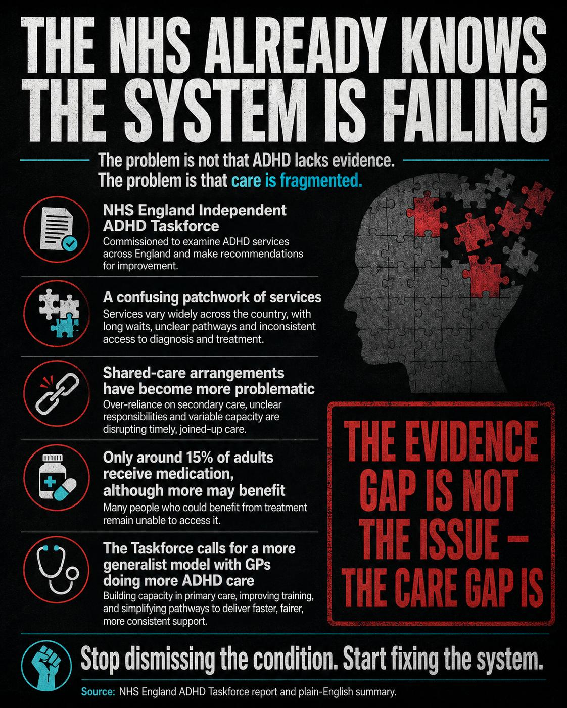
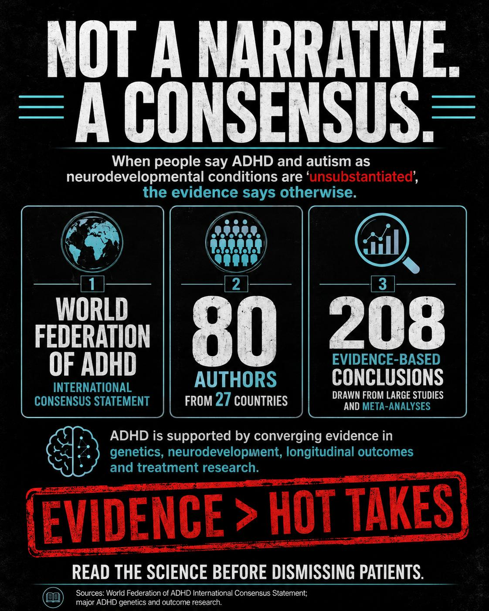
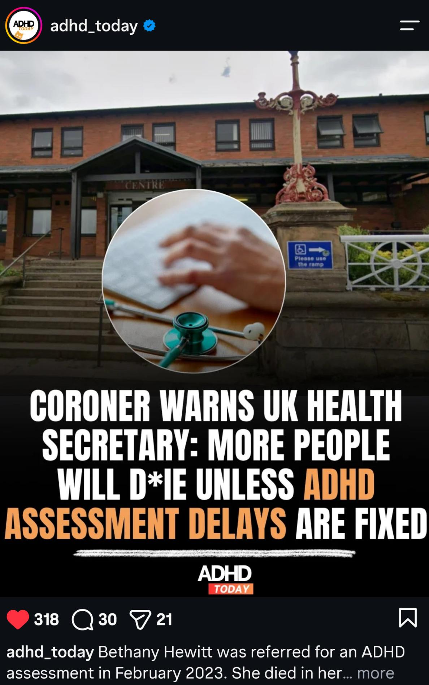

What the count is saying
As of 30 September 2026 the poster count is 273 days since medication continuity was lost, 211 days since the GP wrote that the urgency of the case could not be overstated, 155 days since Coventry and Warwickshire ICB said Coventry and Warwickshire Partnership Trust would deal with it, and 42 days since the ICB repeated materially the same position. Treatment continuity restored: 0. Substantive answers to the advocate’s questions: 0. Effective resolution by the ICB: 0.
The days keep counting even when the meetings do.
The shape of it
Treatment was established in 2019 and continued. Concerns rose in 2023. In early 2024 the medicine changed. In March 2024 access stopped without a taper plan the person could actually use. After that came warnings, reviews, and referrals that did not put a named owner back on the original plan. Cardiology clearance on 19 June 2026 did not produce an ADHD restart. A home visit in August 2026 recorded that a letter confirming a second opinion was expected the following week. The letter did not arrive. On 19 August 2026 the ICB wrote that it remained assured the trust was best placed to respond. Assurance is not a prescription and it is not a safety plan.
Why this is not a private dispute
The NHS England ADHD taskforce has already said adult care is a patchwork, shared care has become harder, and only a minority of adults who might benefit are on medication. That is the system this gap sits in. A personal chronology shows what the patchwork feels like when the shared-care door shuts and nobody picks up the plan.

The condition is not the argument
The World Federation of ADHD international consensus statement is the short answer to “unsubstantiated”. The argument here is continuity, not whether ADHD exists.

Loss of life, said carefully
A coroner has warned that more people will die if ADHD assessment delays are not fixed. Bethany Hewitt was referred for assessment in February 2023 and later died. The prevention-of-future-deaths record says intent was unclear and that delay likely contributed to declining mental health. It does not say a documentary, or this case, caused that death. The point that does transfer is simpler. Services already had warnings. Meetings and replies are not the same thing as a person still receiving the treatment that had been holding them together.

What this page will not do
It will not call the gap torture as a legal finding. It will not publish clinical letters or a personal inbox. It will not argue for privatising the NHS. The demand is narrower and harder to dodge: a named owner, a written safety plan, and the established treatment restarted or a reasoned refusal with a date.